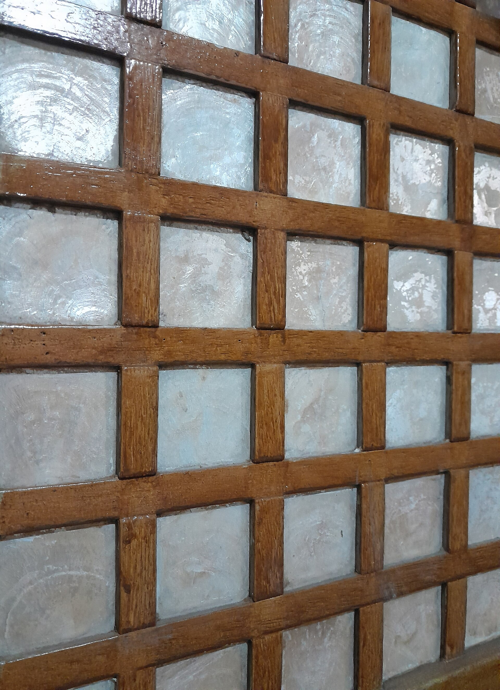

A small Filipino practice, partner-led, working at the scale of one careful project at a time.
Anyo at Disenyo (Tagalog for "form and design") was founded in Batangas City. We design houses, interiors, and small commercial spaces for clients who want a thoughtful, slow-built result — and who are willing to invest in the questions before the drawings.
Three things we believe about Filipino buildings.
The climate writes the brief.
Heat, humidity, monsoon, and afternoon glare are the most honest design constraints we have. A house in Batangas should sit a little above the ground, breathe through both sides, and shelter the rooms that matter most under deep shade. We start every project here and let the rest follow.
The materials are already nearby.
Narra, gemelina, adobe block, lime plaster, capiz, raw concrete. We design with what local craftsmen handle every week, in finishes that age into a place rather than against it. Imported finishes are a last resort, not a first instinct.
Small is the point.
We stay deliberately small so the principal architect is in the room when the door details are decided, the cabinetmaker is hired, and the punch list is walked. There is no junior team translating second-hand notes onto your house.
What we are commissioned to do.
New houses & buildings
Single-family residences and small commercial buildings — schematic design through construction documents, with a site visit cadence the project actually needs (usually weekly during framing and finishing).
Interior architecture
Layout, millwork, lighting, and material specification — for new buildings or as a stand-alone renovation. We draw every cabinet and detail door rather than off-loading the decisions to a contractor.
Planning & feasibility
For clients evaluating a site, programming a multi-phase development, or testing how much house a small lot can hold. Useful before you commit to a full commission — sometimes the answer is "not this site."
Construction administration
We administer the construction phase on every project we design — coordinating the contractor, checking the work against the documents, and resolving the inevitable site decisions in writing.
The architect behind the practice.

A registered architect working out of Batangas City since 2014.
The studio was founded as a one-person practice and has remained a tight one — taking on roughly five to seven commissions a year. We do not subcontract design; every drawing is produced in-house. We do not take on work outside Luzon or projects we cannot personally visit during construction.
Before founding the studio, the principal worked for ten years in Manila-based practices on residential and small institutional work, and trained in architecture at the University of Santo Tomas.
Credentials
- Education
- B.S. Architecture — University of Santo Tomas [verify]
- Licence
- PRC-registered architect, Philippines [reg. no. — verify]
- Founded
- 2014, Batangas City
- Teaches
- Guest critic, undergraduate design studios [verify]
A project, end to end, in four stages.
Inquiry
A first conversation, usually at the site or over coffee. We listen for the brief that hasn't been written yet, and decide together whether the commission is a fit for both of us.
Schematic
Site analysis, programming, and the first plans and massing. Two or three iterations, presented in person. The shape of the project is set here, in pencil.
Documentation
Full construction documents, specifications, and the details that decide how the building will actually be built. Permits filed, contractor bidding supported.
Construction
Weekly visits during framing and finishing, written field reports, and a final punch list walked with the contractor before turnover. We stay until you move in.
Tell us about your site.
If a paragraph or two of background fits the message field, that is more than enough to start.
Begin a project